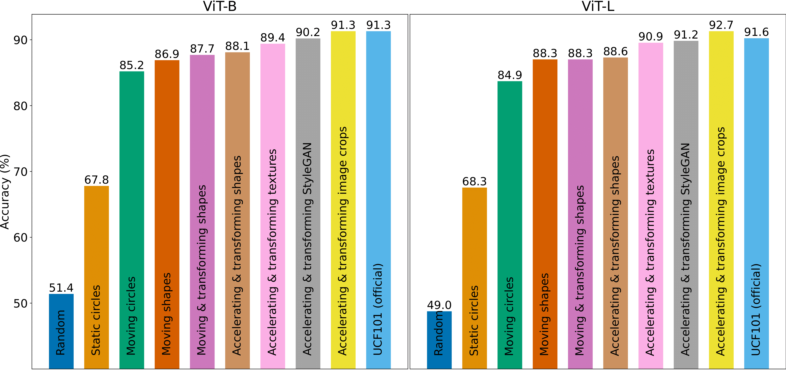
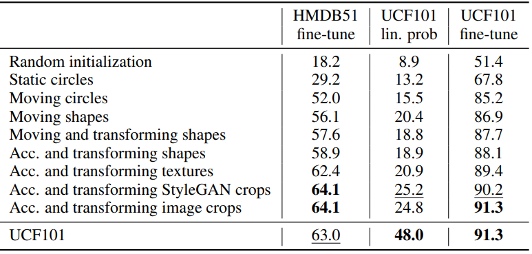
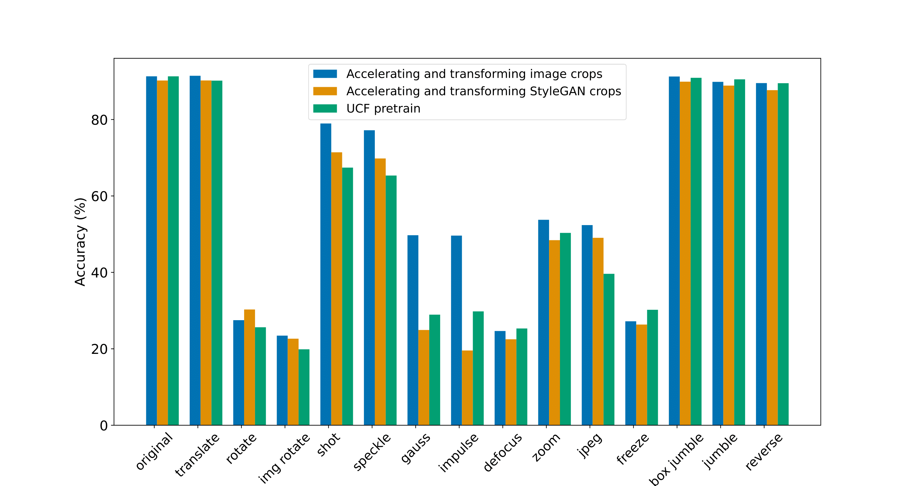
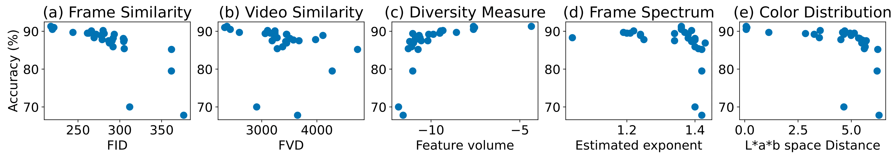
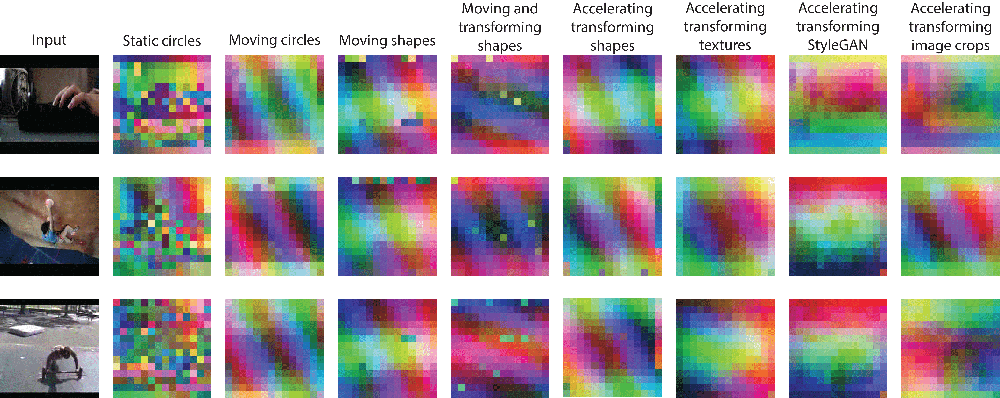

without Natural Videos

In this paper, we show that useful video representations can be learned from synthetic videos and natural images, without incorporating natural videos in the training. We propose a progression of video datasets synthesized by simple generative processes, that model a growing set of natural video properties (e.g. motion, acceleration, and shape transformations). The downstream performance of video models pre-trained on these generated datasets gradually increases with the dataset progression. A VideoMAE model pre-trained on our synthetic videos closes 97.2% of the performance gap on UCF101 action classification between training from scratch and self-supervised pre-training from natural videos, and outperforms the pre-trained model on HMDB51. Introducing crops of static images to the pre-training stage results in similar performance to UCF101 pre-training and outperforms the UCF101 pre-trained model on 11 out of 14 out-of-distribution datasets of UCF101-P. Analyzing the low-level properties of the datasets, we identify correlations between frame diversity, frame similarity to natural data, and downstream performance. Our approach provides a more controllable and transparent alternative to video data curation processes for pre-training.
We provide examples of each of the datasets in the presented progression.
• Static circles
• Moving circles
• Moving shapes
• Moving and transforming shapes
• Accelerating transforming shapes
• Accelerating transforming textures
• Accelerating transforming StyleGAN crops
• Accelerating transforming image crops
We evaluate our pre-trained models for action recognition. We test the models on UCF101, a dataset that contains 13,320 video clips of human actions categorized to 101 classes, on HMDB51, a dataset of additional 6,766 human action video clips categorized to 51 classes. We evaluate out-of-distribution action recognition on UCF101-P, which includes videos from the test-set of UCF101, corrupted with 4 types of low-level synthetic corruptions - camera motion, blur, noise, and digital corruptions.
Action recognition accuracy on UCF101. We present the UCF101 classification accuracy of the progression of models, after fine-tuning each of them on UCF101. The accuracy increases along the progression.
Additional action recognition results (ViT-B). We present the classification accuracy on HMDB51 after fine-tuning and on UCF101 after linear probing/fine-tuning for all the pre-training datasets in our progression and the two baselines.
Distribution Shift results on UCF101-P (ViT-B). The last model in our progression outperforms pre-training on natural videos for 11 out of 14 corruption datasets.
During our experiments, we created multiple versions of each dataset we presented, with differences in configuration (e.g. different video background colors and different object speeds). In total, we generated 28 datasets and trained ViT-B VideoMAE on each. We plot the UCF101 fine-tuning accuracies of the models as a function of their similarity to UCF101, and compare the properties of individual frames.
Dataset properties compared to downstream performance. We compare the downstream classification accuracy on UCF101 after fine-tuning to frame and video properties of all the dataset variants we used
We visualize the learned representation produced by the above models. We compute PCA on the attention keys extracted from the last VideoMAE encoder layer across 32 frames from 70 videos from the same class of UCF101. We plot the first three principal components as red, green, and blue channels and present features for 2-frame inputs
Feature visualizations for pre-trained models. We present the 3 principal components of the attention keys of the last encoder layer, as the three color channels. Different object parts start to appear as the datasets progress.
We also provide visualizations of the learned representations for the diferent datasets in video format.
• Original video from UCF101
• Static circles
• Moving circles
• Moving shapes
• Moving and transforming shapes
• Accelerating transforming shapes
• Accelerating transforming textures
• Accelerating transforming StyleGAN crops
• Accelerating transforming image crops
Acknowledgements
The authors would like to thank Amil Dravid and Ren Wang for their valuable comments and feedback on our paper; and thank UC Berkeley for the computational support to perform data processing and experiments. YG is supported by the Google Fellowship.